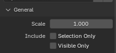
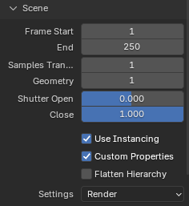
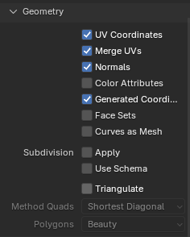
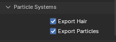

Alembic¶
Trích từ trang chủ Alembic:
Alembic là một khung trao đổi đồ họa máy tính mở. Alembic chưng cất các scene phức tạp, có animation, thành một tập kết quả hình học đã bake mang tính phi thủ tục và độc lập với ứng dụng. Việc 'chưng cất' scene thành geometry đã bake này hoàn toàn tương tự như việc chưng cất các scene chiếu sáng và render thành dữ liệu ảnh đã render.
Alembic tập trung vào việc lưu trữ hiệu quả các kết quả đã tính toán của các cấu trúc hình học thủ tục phức tạp. Nó đặc biệt không quan tâm đến việc lưu trữ đồ thị phụ thuộc phức tạp của các công cụ thủ tục dùng để tạo ra các kết quả đã tính toán đó. Ví dụ, Alembic sẽ lưu trữ hiệu quả các vị trí vertex động và transform động — vốn là kết quả của một quá trình animation và mô phỏng tùy ý phức tạp, có thể bao gồm enveloping, corrective shape, mô phỏng bảo toàn thể tích, mô phỏng cloth và flesh, v.v. Alembic sẽ không cố lưu trữ một biểu diễn của mạng lưới tính toán (về cơ bản là các rig) cần thiết để tạo ra các vị trí vertex động và transform động cuối cùng.
Nói ngắn gọn, Alembic có thể dùng để ghi một mesh có animation ra ổ đĩa, rồi đọc lại một cách nhanh chóng và hiệu quả. Điều này có nghĩa là một mesh có thể được animate bằng một rig rất tốn CPU, sau đó 'bake' thành file Alembic. Cuối cùng, nó có thể được tải vào file shot để shading và chiếu sáng với mức dùng CPU khiêm tốn.
Nhờ tính chất Mã nguồn Mở của chuẩn Alembic cũng như của thư viện C++ triển khai chuẩn đó, Blender có thể được dùng trong một pipeline lai. Ví dụ, phần mềm khác như Houdini hay Maya có thể export file sang Alembic, sau đó các file này được tải, shade và render trong Blender. Cũng có thể animate nhân vật (hoặc model khác) trong Blender, export sang Alembic, rồi tải các file đó vào phần mềm khác để xử lý tiếp.
Import File Alembic¶
Khi import một file Alembic, modifier Mesh Sequence Cache sẽ tự động được thêm vào các mesh biến đổi theo thời gian. Đối với transform của object biến đổi theo thời gian (tức animation của rotation, location hay scale), Transform Cache Constraint được sử dụng.
General¶
- Scale
Giá trị dùng để phóng to hay thu nhỏ object so với gốc tọa độ của world
Tùy chọn¶
- Relative Path
Chọn file tương đối so với blend-file.
- Set Frame Range
Nếu đánh dấu, cập nhật frame bắt đầu và frame kết thúc của scene cho khớp với archive Alembic.
- Is Sequence
Đặt thành true nếu cache bị chia thành nhiều file riêng.
- Validate Meshes
Kiểm tra mesh được nhập có dữ liệu hỏng và sửa nếu cần. Khi tắt, dữ liệu sai có thể gây crash khi hiển thị hoặc chỉnh sửa mesh. Tùy chọn này khiến việc nhập chậm hơn nhưng được khuyến nghị, vì lỗi dữ liệu không phải lúc nào cũng rõ ràng.
- Always Add Cache Reader
Thêm cache modifier và constraint vào các object đã import kể cả khi chúng không được animate, để chúng có thể được cập nhật khi tải lại archive Alembic.
Export sang File Alembic¶
Phần này mô tả tác dụng của các tùy chọn export khác nhau.
General¶

Các tùy chọn chung.¶
- Scale
Đặt scale toàn cục của file Alembic. Giữ nguyên giá trị mặc định 1.0 để dùng đơn vị của Blender.
- Include -- Selection Only
Khi bật, chỉ export các object được chọn. Khi tắt, mọi object đều được export.
Scene¶

Các tùy chọn scene.¶
- Frame Start, End
Đặt dải frame để export sang Alembic. Mặc định là dải frame hiện tại của scene.
- Sub-frame Sampling
Các tùy chọn này điều khiển việc lấy mẫu giữa các frame (sub-frame) của animation.
- Samples Transform
Transform Samples đặt số lần mỗi frame mà các transform động được lấy mẫu và ghi ra Alembic.
- Geometry
Geometry Samples đặt điều tương tự, nhưng dành cho geometry động.
- Shutter Open, Close
Shutter Open/Close xác định khoảng [open, close] mà các mẫu được lấy trong đó. Dải hợp lệ là -1 đến 1, trong đó -1 chỉ frame trước, 0 chỉ frame hiện tại, và 1 chỉ frame kế tiếp.
Ví dụ, nếu muốn có thông tin cho motion blur mesh chi tiết, có thể ghi một số subframe quanh frame hiện tại ra Alembic bằng cách dùng số mẫu là 5, Shutter Open tại -0.25 và Shutter Close tại 0.25. Điều này mô phỏng một shutter "180 độ", mở 90 độ trước frame và đóng 90 độ sau frame.
- Use Instancing
Export dữ liệu của các object nhân đôi hoặc được instance thành instance Alembic; giúp tăng tốc độ export và có thể tắt đi để tương thích với phần mềm khác.
- Custom Properties
Khi bật (đây là mặc định), custom property cũng được export sang Alembic. Các kiểu custom property sau đây được hỗ trợ:
Số (
int,float) và chuỗi. Chúng được export thành mảng một phần tử, nên47sẽ được export thành[47]sang Alembic, còn"Agent"thành["Agent"]. Điều này khớp với hành vi của nhiều DCCs khác.Danh sách số và chuỗi. Chúng được export nguyên trạng, nên
[327, 47]được export thành[327, 47].Ma trận và mảng số lồng nhau. Chúng được làm phẳng thành một danh sách dài, nên ma trận số 3×2 sẽ thành danh sách 6 số. Tương tự, danh sách lồng nhau
[[1, 2, 3], [4, 5], [6]]sẽ được export thành[1, 2, 3, 4, 5, 6].Số cũng có thể được animate.
- Flatten Hierarchy
Khi tắt, quan hệ cha/con giữa các object cũng được export. Mọi object cha không tự nó được export nhưng có con được export, sẽ được thay bằng một empty. Khi bật, quan hệ cha/con không được export, và mọi transform đều được ghi theo tọa độ world.
- Settings
Xác định độ hiển thị của object, cài đặt modifier, và những phần khác nơi có cài đặt khác nhau cho viewport và render.
- Render:
Dùng cài đặt Render cho độ hiển thị object, cài đặt modifier, v.v.
- Viewport:
Dùng cài đặt Viewport cho độ hiển thị object, cài đặt modifier, v.v.
Geometry¶

Các tùy chọn geometry.¶
- UV Coordinates
Khi bật, UV map được export. Mặc dù chuẩn Alembic chỉ hỗ trợ một UV map duy nhất, Blender export mọi UV map theo cách mà phần mềm khác vẫn có thể đọc được.
- Merge UVs
Khi bật, các UV dùng chung một vertex và cùng vị trí sẽ được hợp nhất thành một UV duy nhất. File export có thể nhỏ hơn một chút.
- Normals
Khi bật, Normals của object được export. Xem Custom Split Normals của Mesh bên dưới để biết thêm thông tin.
- Color Attributes
Khi bật, export các Color Attribute.
- Face Sets
Export tên material theo từng mặt. Chỉ tên material được export, còn dữ liệu material thì không.
- Subdivisions
- Apply
Áp dụng mọi modifier Subdivision Surface trước khi ghi ra Alembic.
- Use Schema
Ghi mesh đa giác bằng schema "SubD" của Alembic, thay vì schema "PolyMesh". Điều này đặt một tùy chọn import cho chương trình dùng để mở file, nhằm áp dụng dạng subdivision không phá hủy của chương trình đó.
- Triangulate
Tam giác hóa mesh trước khi ghi ra Alembic. Để biết chi tiết hơn về từng tùy chọn cụ thể, xem modifier Triangulate.
Particle Systems¶

Các tùy chọn Particle Systems.¶
Alembic không hỗ trợ Particle Systems, cũng giống như nó không hỗ trợ armature.
- Export Hair
Hair được export thành các curve động có độ rộng bằng không.
- Export Particles
Particle được export thành các điểm động.
Custom Split Normals của Mesh¶
Blender hỗ trợ import và export custom normals sang file Alembic. Theo nguyên tắc cơ bản, một mesh hoàn toàn mượt sẽ được export không kèm normals, nhờ đó tạo ra file Alembic nhỏ nhất. Điều này thể hiện ở cả bộ import; mesh Alembic không có normals sẽ được tải thành mesh mượt.
Khi export, với mỗi mesh:
Nếu mesh có Custom Loop Normals thì loop normals sẽ được export.
Nếu một hay nhiều polygon được đánh dấu flat thì loop normals cũng được export.
Nếu không, sẽ không normals nào được export.
Khi import, nếu mesh Alembic chứa:
Loop normals (
kFacevaryingScope) được dùng làm custom loop normals.Vertex normals (
kVertexScopehoặckVaryingScope) được chuyển thành loop normals, và được xử lý như trên.Nếu không có normals thì mesh được đánh dấu là mượt.
Các kiểu normals không được hỗ trợ (
kConstantScope,kUniformScope,kUnknownScope) được xử lý như không có normals.
Khi một mesh được import không chứa normals, hình dáng cuối cùng có thể được điều khiển bằng Normal's Shading.
Xử lý Thời gian¶
Khác với Blender và nhiều ứng dụng cũng như định dạng file khác, file Alembic không hề có khái niệm frame. Alembic làm việc thuần túy với thời gian và các giá trị được lấy mẫu theo thời gian. Ví dụ, không có cách nào phân biệt 30 FPS với 2 mẫu mỗi frame và 60 FPS với 1 mẫu mỗi frame. Điều này khiến nhiều nhà phát triển đơn giản là cứng hóa 24 FPS khi đọc file Alembic.
Blender dùng tần số frame hiện tại của scene để chuyển số frame (trong Blender) thành thời gian tính bằng giây (trong Alembic). Nhờ đó, bạn có thể import một file Alembic được tạo ở 120 FPS vào một scene Blender 30 FPS mà vẫn không thấy bất kỳ độ giãn thời gian nào.